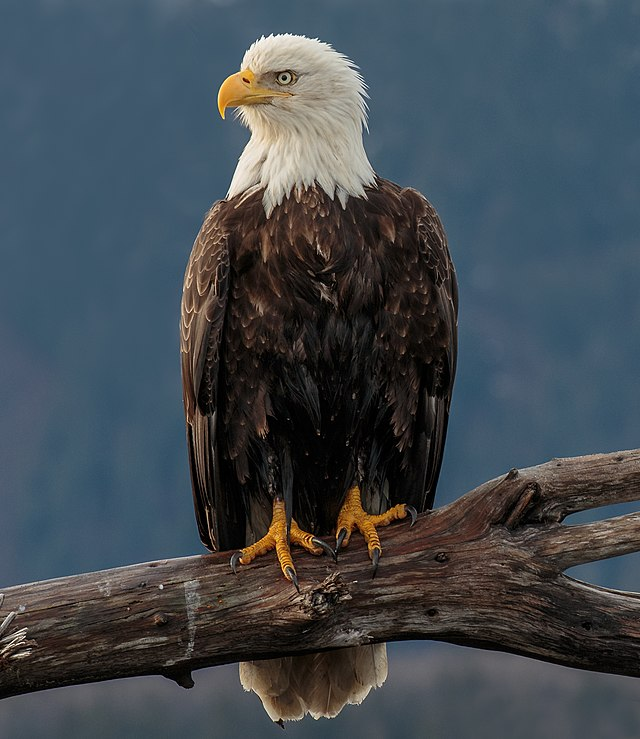

El águila calva, también conocida como águila americana, águila de cabeza blanca, pigargo de cabeza blanca o pigargo americano, es un ave rapaz accipitriforme de la familia Accipitridae, que habita en América del Norte, del sur de Canadá a Baja California Sur y Sonora en México. Se conocen varias subespecies.
- No es calva, en si su plumaje de su cabeza es blanca
- El Águila Calva, al igual que el Águila Real, tiene el síndrome de Dimorfismo sexual, el cual refiere a la variación del peso y talla entre ambos sexos.
- Siendo el factor predominante en este caso la hembra, la cual tiene mayor peso y tamaño, la hembra de esta especie en la etapa adulta, lista para reproducción es 25% más grande que el macho, llegando a medir hasta 2, 30 cm de envergadura con las alas abiertas.
- el macho, puede medir hasta 1.8 cm de largo, siendo visualmente más pequeño que la hembra.
- La cola del Águila Calva, es redondeada al final con el resaltante color blanco al final de su plumaje.
Regresar Inicio